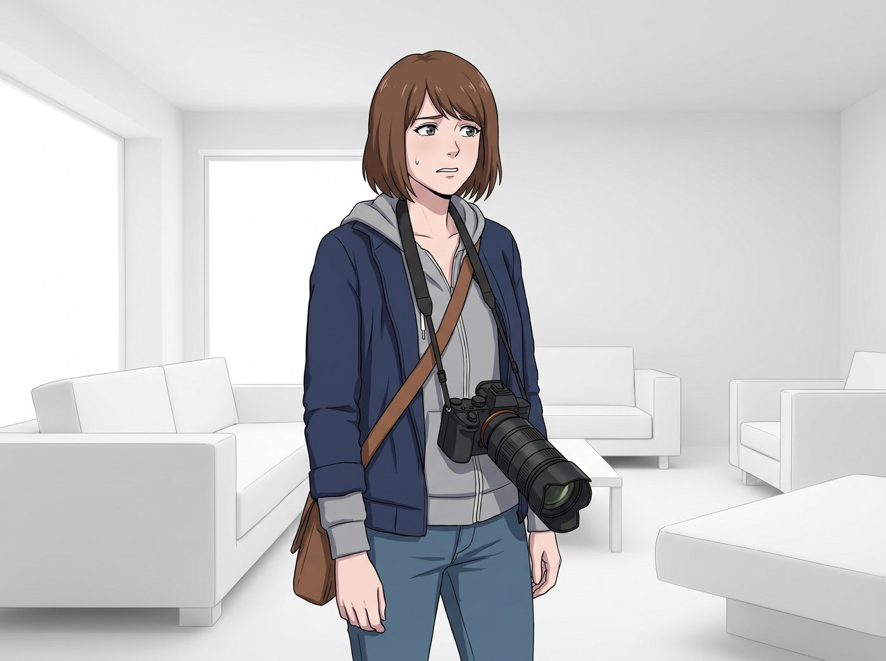
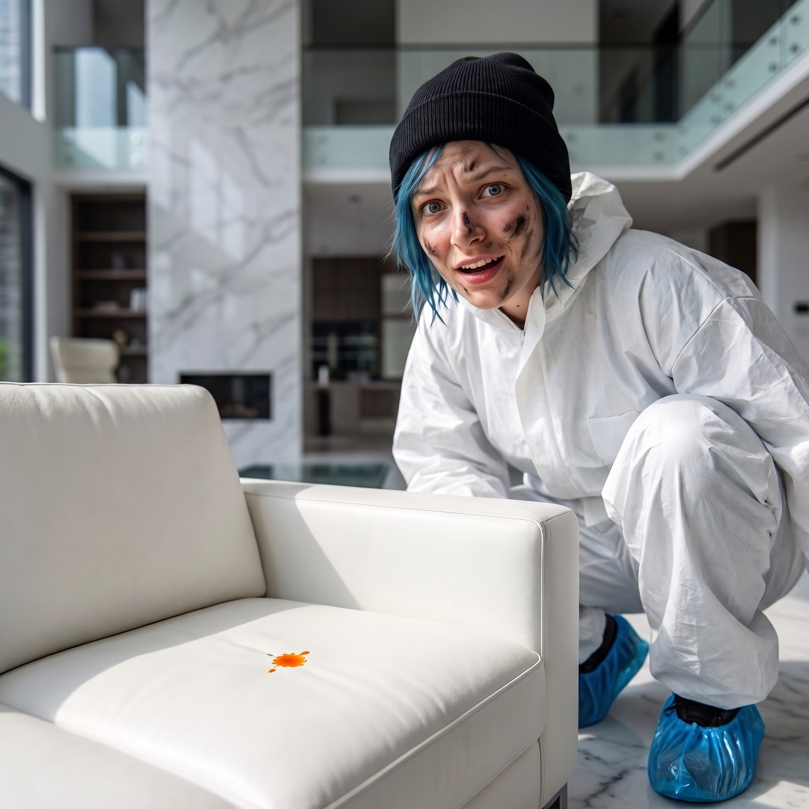

橘色的嘲弄


二號車廂的化糞池管線在一個週二的早晨徹底崩潰了。
面對高達1500美金的緊急維修報價，Chloe 默默捂住了剛用特卡利潤買下的皮卡全新化油器，而 Victoria 則戴著真絲眼罩，冷酷地宣佈：「我的基金會是用來推動當代藝術的，不是用來處理妳們這些平民的生物排泄物的。自己想辦法，否則今晚大家都去懸崖邊解決。」
於是，為了拯救二號車廂的洗手間，Max Caulfield 被迫接下了 Victoria 介紹的臨時恰飯項目：為西雅圖市中心一棟售價千萬的極簡主義高奢頂層公寓，拍攝房地產商業宣傳冊。
這場商業攝影的過程，不僅無聊，而且荒誕到了令 Max 懷疑人生的地步。
一、拿著醫療器械的藝術家
站在那間全白、沒有一絲灰塵、連家具邊緣都呈現完美九十度直角的客廳裡，Max 覺得自己快要窒息了。
她的脖子上沒有掛著那台充滿溫度的磨損老相機。為了滿足客戶極致銳利、千萬像素、高動態範圍的需求，Victoria 強行去租借中心給她塞了一台頂配的無反數位相機，鏡頭正是那顆她極度嫌棄的內變焦完美工業品。
「這東西拿在手裡，感覺就像我要給這間公寓做大腸鏡檢查。」Max 痛苦地看著相機螢幕上密密麻麻的對焦框，電子馬達發出微弱且毫無靈魂的滴滴聲，讓她渾身起雞皮疙瘩。
站在旁邊的房產經紀人 Bryce——一個穿著緊身西裝、噴著濃烈香水、滿嘴矽谷黑話的男人，正指手畫腳地提著要求：「Max，對吧？聽著，我要這間房子看起來像未來的烏托邦。把ISO降到最低，光圈縮小，我要從地毯的纖維到窗外的太空針塔都絕對清晰。記住，不要陰影！不要情緒！不要任何有人住過的痕跡！這是一件純粹的資產！」
二、藍領助理的無菌室折磨
作為這場恰飯行動的首席打光助理兼司機，Chloe 此刻正經歷著比 Max 更嚴重的生理排斥。
她被迫穿上了一件借來的、極其不合身的白色無塵防護服，腳上還套著藍色的塑膠鞋套，這讓她看起來像一個剛從生化危機現場逃出來的藍髮難民。
「Caulfield，如果我在這間像精神病院一樣白的屋子裡待超過一個小時，我就會因為缺乏細菌和機油而死掉。」Chloe 舉著沉重的反光板，無聊到開始在原地像企鵝一樣滑行。她看著那張標價三萬美金、白得發亮的極簡沙發，發出了靈魂拷問：「這沙發連個靠背都沒有，坐上去絕對會腰間盤突出。有錢人是不是都有某種自虐傾向？」
三、荒誕的極致：消除一切活物的痕跡
接下來的三個小時，是一場對 Max 攝影哲學的公開處刑。
「Max！那個抱枕的角度不對！它的褶皺看起來太隨意了，用熨斗把它燙平！」 「Max！窗戶玻璃上有一顆灰塵的倒影！後期能用軟體把它徹底抹除嗎？」 「Max！廚房的燈光太暖了，調成冷白光！我要它看起來像外科手術室一樣專業！」
Max 僵硬地按著快門。相機螢幕上的照片完美、銳利、毫無死角，但也毫無生命力。這不是攝影，這是法醫在進行現場取證。她覺得自己心中的那個暗房正在被無情的冷白光一點點漂白。
四、破防與適當混沌的降臨
崩潰發生在下午兩點。
Bryce 正在要求 Max 趴在地板上，用一個極其扭曲的姿勢去拍攝大理石吧台的極致平整度。而已經無聊到開始啃手指的 Chloe，終於忍不住從防護服的口袋裡，掏出了一包她偷偷帶進來的、橘紅色的辣味薯圈。
「咔嚓。」清脆的咀嚼聲在寂靜的無菌室裡響起。
Bryce 猛地回頭，發出了一聲淒厲的尖叫：「妳在幹什麼？！那可是義大利進口的卡拉拉白大理石！妳手上的橘色粉末會毀了它的風水！」
Chloe 嚇了一跳，手指一抖，一顆橘紅色的薯圈在空中畫出一道優美的拋物線，無比精準地落在了那張標價三萬美金的純白沙發正中央，留下了一個指甲蓋大小、卻無比刺眼的橘色油漬。
空氣瞬間凝固。Bryce 氣得快要暈過去，拿著對講機準備叫保安。
但就在這一刻，一直像個機器人一樣毫無生氣的 Max，突然感覺到了某種久違的溫度。
那張原本像棺材一樣死寂的沙發，因為這滴荒謬的橘色油漬，突然活了過來。它不再是一件高高在上的資產，而是一個會被弄髒、會承載生活荒誕的物體。
Max 幾乎是出於本能，一把扔開了那台昂貴的數位相機，從自己的隨身包裡抽出了那台掉漆的拍立得。
「Max！妳在幹什麼！阻止妳的野蠻助理！」Bryce 尖叫著。
「閉嘴，Bryce。現在是藝術創作時間。」Max 眼神銳利，她大步走到沙發前。Chloe 則無辜地舉著那包薯圈，防護服半拉著，藍色的亂髮和嘴角的薯片渣，與這間冰冷的高奢公寓形成了極致的反差與撕裂感。
「咔嚓！」閃光燈亮起。
五、拿著酬勞逃離現場
十分鐘後，Max 和 Chloe 提著裝滿器材的箱子，被憤怒的房產經紀人轟出了頂層公寓。
「我們被解雇了，而且大概率會被扣掉一半的尾款。」Max 站在電梯裡，看著手裡那張剛剛顯影的拍立得相片。畫面裡，冰冷的千萬豪宅成為了模糊的背景，焦點完全落在了前景那滴刺眼的橘色油漬，以及 Chloe 那張帶著機油味、不知所措卻充滿生命力的臉上。
「但我們拿到了八百美金的預付款，剛好夠付化糞池修理工的訂金。」Chloe 一把扯掉腳上的藍色鞋套，長長地舒了一口氣，然後從口袋裡掏出兩瓶從公寓冰箱裡順手牽羊的頂級礦泉水遞給 Max，「而且，我們還賺了兩瓶有錢人喝的水。」
Max 接過水，看著相片，終於忍不住大笑出聲。
當晚，Victoria 看著那張被 Max 隨手扔在吧台上的拍立得，名媛的眼神停留了足足一分鐘。
「荒誕的階級入侵，對無菌資本主義的橘色嘲弄。」Victoria 抿了一口紅酒，將相片小心翼翼地收進了自己的文件夾裡，「Caulfield，妳這場失敗的商業攝影，剛好夠資格成為我下個月畫廊先鋒展的開場海報。至於尾款，我會讓我的律師從那個蠢貨經紀人手裡一分不少地敲出來。」